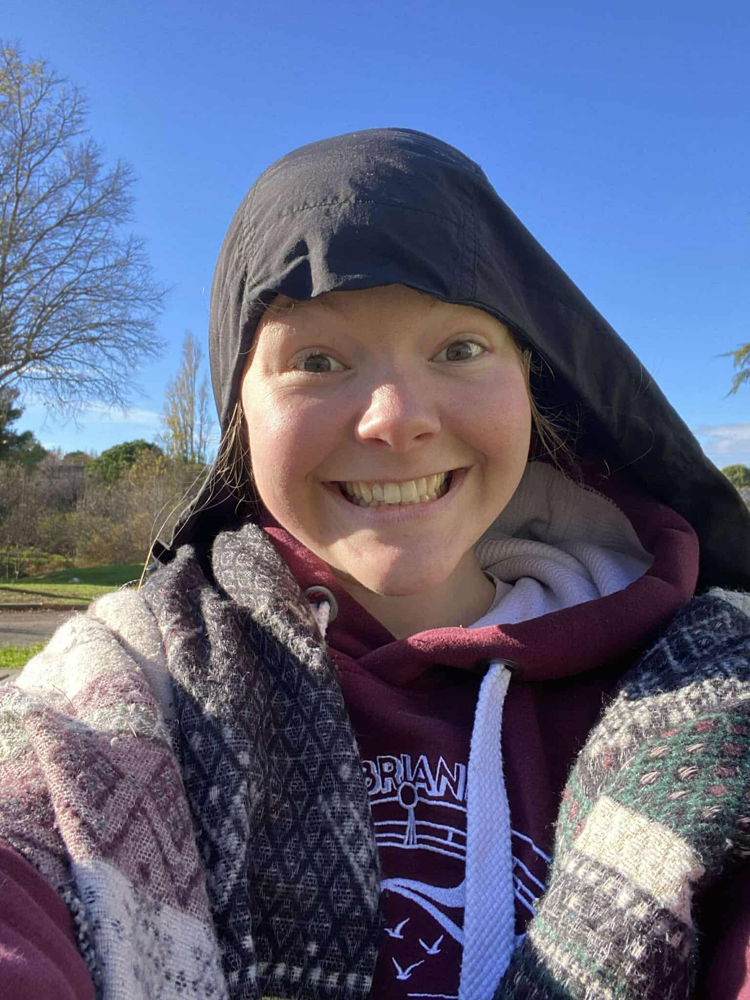

☰

Petite personne à hauteur de table, elle compense par une énergie hors du commun (et une consommation industrielle de tisanes). Son addiction au thé chaud confirme que, malgré son âge civil, son corps a depuis longtemps adopté celui d’une grand-mère bretonne.
Bretonne pure souche d’ailleurs : elle ne jure que par le beurre salé et se transforme en homard dès que l’indice UV dépasse 3. Elle passe la moitié de ses soirées à la salle de sport, râle contre ceux qui la poussent à bout… pour mieux y retourner le lendemain.
Côté repas, c’est un cas d’école : elle ne dîne jamais — au grand désespoir de ses colocs qui tentent chaque soir de lui faire avaler quelque chose. Seule exception : une pizza imprévue peut parfois faire vaciller sa volonté. Et pendant qu’elle ne mange pas, elle réussit à faire vingt-cinq choses à la fois, toujours un épisode de FBI International en fond sonore, parce que le silence, c’est pour les faibles.
Elle se plaint souvent des cohésions KSI, mais finit toujours par passer trois heures en cuisine pour préparer un plat digne d’un resto étoilé. Organisée (selon elle), elle applique la fameuse méthode des enveloppes… tout en entreposant ses affaires dans la plus grande chambre de la Mine, transformée en zone sinistrée digne de Tchernobyl.
Chaque samedi matin, elle file au marché comme une adulte responsable acheter ses fruits et légumes, avant de menacer d’ouvrir un spa depuis le MSB — projet toujours en phase d’étude. Bientôt, elle mettra la ville entière en danger en apprenant à conduire ; la DREAL est déjà en alerte.
Côté cuisine, ses colocs attendent toujours les fameux cookies promis, mais “elle n’a pas sa machine”. Ils songent sérieusement à la faire dormir sur le canapé pour la forcer à retourner aux fourneaux. En attendant, elle les régale avec des sandwichs habilement volés au RU.
À chaque retour à Marseille, elle perd cinq ans d’espérance de vie après douze heures de bus. Arrivée à la Mine trois mois avant tout le monde, elle a eu le temps de marquer le territoire (et de rager sur le ban de Vianney et Passenger).
Enfin, son quotidien est rythmé par ses chutes : elle se prend des murs, trébuche sans raison, et arbore en permanence des doigts bleu glacier — un choix esthétique assumé, paraît-il.